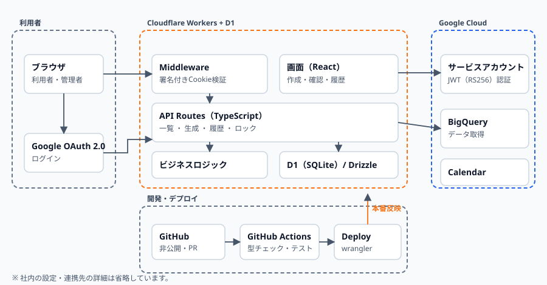

Project
社内業務の自動化ツール
社内のデータを集計し、帳票の作成から外部サービスへの登録までを自動化する Web アプリです。長期インターンで開発に携わりました。
構成

主な機能
- 外部データの取得と金額の計算
- 作成内容の確認・編集と、作成結果の一覧・履歴管理
- 本番の送信前に結果を確認できる「空打ち」モード
- 履歴の CSV 出力
設計の工夫
- 二重処理の防止：対象ごとにロックを取り、確定まで処理が重ならないようにしました。
- ビジネスロジックの分離：金額計算や日付処理を純粋関数に分け、ユニットテストで検証できるようにしました。
- キャッシュの確定管理：外部データは確定したものだけを保存し、再取得を減らしました。
- 秘密情報の管理：APIキーなどは Cloudflare Secrets に保管し、コードには含めていません。
技術スタック
- フロントエンド：React 19、Next.js 互換（vinext）、Vite
- バックエンド：Cloudflare Workers、TypeScript（API Routes）
- データ：Cloudflare D1（SQLite）、Drizzle ORM
- 認証：Google OAuth 2.0、署名付きセッション Cookie
- 外部連携：Google Cloud（BigQuery など）、サービスアカウント（JWT）
- 開発・デプロイ：GitHub、GitHub Actions（CI・手動デプロイ）、wrangler